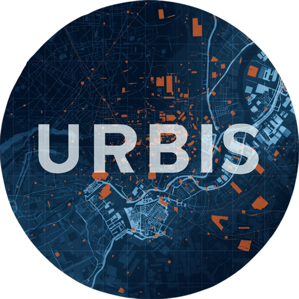

URBIS
Open AI that finds slums and informal settlements in any city, from free satellite imagery and open building data. Draw a box around a city, let the model score it, review the boxes it is unsure about, then export a map and house counts.
URBIS runs on your own computer. That keeps it free and keeps your reviews private. Install once, then open it in your browser at localhost:8770.
Install
Needs git, Python 3.11 or newer, about 4 GB of disk and an internet connection. macOS and Linux (Windows: use WSL).
curl -fsSL https://urbis.shreyam.me/install.sh | sh cd urbis && ./urbis.sh
The browser opens at http://localhost:8770. Press Ctrl-C in the terminal to stop it. A computer with a GPU or Apple chip scores a city in minutes; on a plain CPU, expect several times longer.
Tutorial
- Create an account. It stays on your computer.
- New city. Search a place, drag the box (1 to 600 km²), name it, press Create city.
- Wait for set-up (about 6 min plus 0.3 min per km² on a laptop GPU). It downloads building footprints and satellite tiles, then scores every 100 m box with buildings.
- Review. Boxes come most-likely first. Press Y (slum), N (not slum), S (skip), Z (zoom). The page says Review complete when little slum is left to find.
- Rebuild outlines to draw settlement outlines and list houses, then export GeoJSON, KML, GeoPackage, Shapefile, CSV, GeoTIFF or an HTML report.
Be honest about accuracy
On cities it never saw, about 38 % of the model's top marks are real slums when it finds 80 % of them. The human review is what makes the map reliable. House counts are a minimum, because tightly packed roofs merge into one footprint.
Data and credits
Imagery: Esri World Imagery (Esri, Maxar, Earthstar Geographics and the GIS User Community); use is subject to Esri's terms. Buildings: Overture Maps Foundation (Google, Microsoft, OpenStreetMap contributors). Place search: OpenStreetMap Nominatim, © OpenStreetMap contributors (ODbL). Slum polygons used for training include CC BY-NC sources, so use URBIS output for non-commercial purposes unless you check each source's licence. Model backbone: DINOv3 (Meta).